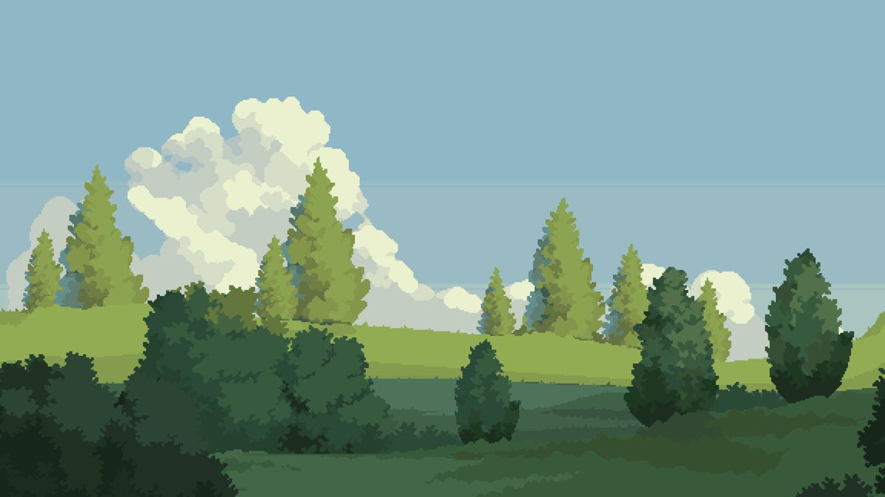

홀로그램 AI 키오스크
홀로그램 화면과 대화하며 주문하는 카페 키오스크입니다.
- 유형
- 부산실증사업
- 역할
- 프론트엔드 개발 및 AI 연동
- 기술
- Gemini API · 음성 인식 · 홀로그램 디스플레이
- 핵심
- 자연어 대화로 주문·결제까지 이어지는 화면 흐름


정유리
복잡한 서비스를 이해하기 쉬운 화면으로 만듭니다.
웹 접근성, 실시간 데이터, AI 서비스까지. 다양한 사용 환경의 화면을 만들어 왔습니다.
대표 프로젝트 6개입니다. 카드를 누르면 상세 케이스 스터디로 이동합니다.
홀로그램 화면과 대화하며 주문하는 카페 키오스크입니다.
장애인 구직자를 위한 고용 플랫폼입니다. 장애 유형에 따라 면접 형식과 화면 지원 방식이 달라지는 맞춤 면접이 핵심입니다.


채용 공고 탐색, AI 추천, 이력서 작성, AI 모의면접, 결과 리포트를 하나로 묶은 채용 플랫폼입니다.


초등학생이 듣기·말하기·읽기·쓰기를 탐험하듯 학습하고, 선생님은 학급의 진단·학습 현황을 통계로 확인하는 교육 서비스입니다.

대입 면접과 항공사 승무원 면접을 한 곳에서 준비하는 AI 모의면접 서비스입니다.

심부전 반려동물의 심박과 호흡을 웨어러블로 실시간 확인하는 두리틀 시리즈입니다.


초기 프로젝트와 공모전, 개인 작업입니다.

도트 그래픽 메타버스 오피스 · 창업 프로젝트
Phaser.js

에너지 데이터를 걸어 다니며 보는 가상 전시관 · 공모전 장려상
Unity · C#

간병인 매칭과 요양 시설 검색 안드로이드 앱 · 1인 개발
Java · PHP · MySQL

스케치 자료를 정리하는 안드로이드 앱 · 1인 개발
Java

Frontend Developer
실용성을 쫓는 개발자입니다. 화면을 예쁘게 만드는 것만큼, 그 화면이 실제 업무와 사용 환경에서 버티는지를 중요하게 봅니다.
동물병원 수술실에서 쓰이는 모니터링 앱처럼 실패하면 안 되는 화면과, 장애인 구직자가 쓰는 서비스처럼 접근성이 곧 사용 가능 여부를 결정하는 화면을 만들어 왔습니다.
화려함보다 꾸준함을 중요하게 생각합니다. 요구사항을 꼼꼼히 확인하고 동료와 소통합니다. 익숙한 방식에 머무르지 않고, 배우고 기록하며 서비스를 개선합니다.
2025.07 – 현재
Frontend Developer
2022.09 – 2025.02 (2년 6개월)
두리틀 수의사용 앱 퍼블리싱, 공식·관리자 웹사이트 개발
2022.03
장려상 (메타버스 에너지 전시관)
2022.02 – 2022.06
메타버스 오피스 창업 프로젝트 · 백엔드 40% · 프론트엔드 30% · 아이디어 30%
희망연봉 3,800만원 이상 (협의)
프로젝트나 협업에 대해 궁금한 점이 있다면 편하게 연락 주세요.